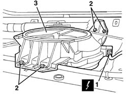

5580T30 Bose sound system' SUBWOOFER - R.R.
- Path
- Procedures > 55 ELECTRICAL EQUIPMENT > 5580 SPECIAL ACCESSORIES > 5580T bose sound system > 5580T30 Bose sound system' SUBWOOFER - R.R.
- Kind
- repair procedure (removal / refitting; the operation number is the code)
- Applies to
- all engines; all production periods
- Interactive page
- https://sloeber94.github.io/elrnDB-a156/en/#/3238554
Applies to: all engines; all production periods; only with equipment: Sedan
 Removing
Removing
 Refitting
Refitting7040H42 rear pillar trim - r r
1. Disconnect the electrical connections.
 | Name | Connector |
|---|---|---|
1 | Subwoofer |
2. Unscrew the bolts
3. Remove the subwoofer.

Applies to: all engines; all production periods; only with equipment: Sedan
Refitting
RemovingCheck that the subwoofer is not damaged.
Place the subwoofer in position.
Tighten the screws.
Connect the electrical connection
7040H42 rear pillar trim - r r
Check the operation of the HI-FI system.